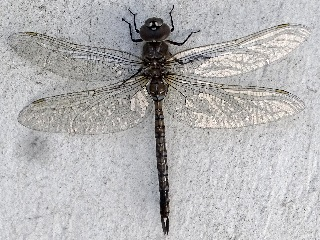

Dragonfly on Wall
This dragonfly was perched on the wall by the garage of the house where I live, in April 2019. It is one of the group of dragonflies known as "darners." Darners are usually large, and many are brown with small blue spots. They are called "darners" because some people think that they are shaped like darning needles (large sewing needles for mending).